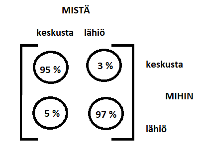

Siirtymälaskuja matriiseilla
Contents
Siirtymälaskuja matriiseilla#
Matriisilaskenta toimii hyvin ongelmissa, joissa halutaan tietää, mitkä ovat joidenkin toisensa poissulkevien tapahtumien todennäköisyydet usean edeltävän vaiheen jälkeen, kun jokaisen tapahtuman todennäköisyys riippuu edellisestä tapahtumasta. Tällaista “todennäköisyysketjua” sanotaan Markovin ketjuksi (Andrei Markov).
Tarkastellaan tapahtumia \(A\) ja \(B\). Oletetaan, että ovat vaihtoehtoisia siten, että jompikumpi niistä tapahtuu varmasti ketjun jokaisessa vaiheessa. Vaiheet voivat olla vaikkapa peräkkäistä päiviä, ja tapahtumat voivat olla esimerkiksi sadesää ja poutainen sää. Todennäköisyysketjuun rakennetaan ns. tilansiirtomatriisi \(T\), jota itsensä kanssa kertomalla päästään aina seuraavan vaiheen tapahtumien todennäköisyyksiin. Yksinkertaisessa esimerkissä tilansiirtomatriisi on seuraava:
\(T=\begin{bmatrix}P_{AA}&P_{BA}\\P_{AB} & P_{BB}\end{bmatrix}\),
missä
\(P_{AA}\) kuvaa todennäköisyyttä sille, että asia \(A\) tapahtuu vaiheessa 2, kun vaiheessa 1 on tapahtunut asia \(A\),
\(P_{BA}\) kuvaa todennäköisyyttä sille, että asia \(A\) tapahtuu vaiheessa 2, kun vaiheessa 1 on tapahtunut asia \(B\),
\(P_{AB}\) kuvaa todennäköisyyttä sille, että asia \(B\) tapahtuu vaiheessa 2, kun vaiheessa 1 on tapahtunut asia \(A\),
\(P_{BB}\) kuvaa todennäköisyyttä sille, että asia \(B\) tapahtuu vaiheessa 2, kun vaiheessa 1 on tapahtunut asia \(B\).
Todennäköisyyslaskennassa tapahtumia kuvaavat todennäköisyydet ovat aina välillä \(0 \ldots 1\) siten, että mahdottoman tapahtuman todennäköisyys on nolla ja varman tapahtuman todennäköisyys on yksi. Todennäköisyys sille, että joko \(A\) tai \(B\) tapahtuu, on 1, sillä olemme olettaneet, että muitakaan vaihtoehtoja ei ole (esimerkiksi: jollakin todennäköisyydelle huomenna sataa ja jollakin todennäköisyydellä ei sada, mutta varmasti joko sataa tai ei sada). Tilansiirtomatriisissa tämä huomioidaan siten, että jokaisessa sarakkeessa alkioiden summan on oltava 1.
Ketjun lähtötilannetta kuvaa matriisi \(p_0=\begin{bmatrix} A_0 \\B_0\end{bmatrix}\), missä \(A_0\) ja \(B_0\) ovat sopivat alkutilanteet. Ne voivat olla todennäköisyyksiä tai lukumääriä. Esimerkiksi jos \(A\) kuvaa sadetta ja \(B\) poutaa, ja alkutilanteessa sataa, niin \(A_0=1\) ja \(B_0=0\). Toisaalta \(A_0\) ja \(B_0\) voivat olla myös tilanteissa \(A\) tai \(B\) olevien yksilöiden lukumääriä: esimerkiksi kaupungissa tai maalla asuvien ihmisten määriä.
Ketjun seuraava tilanne saadaan laskemalla \(p_1=T p_0\). Yleisesti, kun siirtymä tilanteesta toiseen toistuu \(n\) kertaa, niin matriisi \(p_n\), joka sisältää lukumäärät tai todennäköisyydet tapahtumille \(A\) ja \(B\), saadaan laskutoimituksesta \(p_n=T^n p_0\).
Huom! Matriisin potenssiinkorotus tarkoittaa samaa kuin lukujen potenssiinkorotus, eli matriisia kerrotaan itsellään. Matriisin alkioita ei siis koroteta yksittäin potenssiin \(n\).
Esimerkki
Eräällä paikkakunnalla tunnetaan kansanperinteestä, että jos tänään sataa, niin huomennakin sataa 60 % todennäköisyydellä. Jos tänään ei sada, niin huomenna sataa vain 30 % todennäköisyydellä. Millä todennäköisyydellä ylihuomenna sataa, jos tänään ei sada?
Ratkaisu
Alkutilanteessa ei sada, eli tilanne on \(p_0=\begin{bmatrix}0 \\1 \end{bmatrix}\). Merkitään sadetta tapahtumana \(A\) ja poutaa tapahtumana \(B\).
Tilansiirtomatriisiin saadaan helposti todennäköisyydet \(P_{AA}\) ja \(P_{BA}\):
\(T=\begin{bmatrix} 0.6 & 0.3 \\ P_{AB} & P_{BB} \end{bmatrix}\)
Alariville voidaan päätellä todennäköisyydet \(P_{AB}=1-0.6=0.4\) ja \(P_{BB}=1-0.3=0.7\).
Tilansiirtomatriisi on siis \(T=\begin{bmatrix} 0.6 & 0.3 \\ 0.4 & 0.7 \end{bmatrix}\).
Huomisen sääennuste on tällöin
\(p_1=Tp_0 = \begin{bmatrix}0.6 & 0.3 \\ 0.4 & 0.7\end{bmatrix} \begin{bmatrix}0 \\ 1\end{bmatrix} = \begin{bmatrix} 0.3 \\ 0.7 \end{bmatrix}\).
Ylihuomisen ennuste saadaan kertomalla tämä uusi alkutilanne jälleen tilansiirtomatriisilla:
\(p_2=Tp_1 = \begin{bmatrix}0.6 & 0.3 \\ 0.4 & 0.7\end{bmatrix} \begin{bmatrix}0.3 \\ 0.7\end{bmatrix} = \begin{bmatrix} 0.39 \\ 0.61 \end{bmatrix}\).
Sama vastaus saadaan suoraan laskemalla \(p_2=T^2 p_0\).
Octavella laskun voi suorittaa seuraavasti: T=[0.6 0.3;0.4 0.7], T^2*[0;1]
Esimerkki
Erään kaupungin keskustasta (A) muuttaa vuosittain lähiöihin (B) 5 % keskusta-alueen asukkaista, ja lähiöistä muuttaa keskustaan 3 % lähiöiden asukkaista. Nyt keskustassa asuu 100 000 ihmistä ja lähiöissä 150 000. Mitkä ovat keskustan ja lähiöiden asukasluvut
a) 1 vuoden kuluttua,
b) 10 vuoden kuluttua?
Ratkaisu

Muodostetaan tilansiirtomatriisi kuvan avulla: \(T=\begin{bmatrix}0.95&0.03\\0.05&0.97\end{bmatrix}\)
Kerätään alkutilannetta kuvaavaan matriisiin nykyiset asukasmäärät:
\(p_0=\begin{bmatrix}100 000\\150 000\end{bmatrix}\)
a) \(p_1=Tp_0=\begin{bmatrix} 0.95\cdot 100 000+0.03 \cdot 150 000 \\ 0.05\cdot 100 000+0.97\cdot 150 000 \end{bmatrix}=\begin{bmatrix}99 500 \\ 150 500 \end{bmatrix}\)
b) Koska \(p_1=Tp_0\), niin \(p_2=Tp_1=TTp_0=T^2p_0\), \(p_3=T^3p_0\) jne. ja edelleen \(p_{10}=T^{10} p_0\).
Siis 10 vuoden kuluttua
\(p_{10}=\begin{bmatrix} 0.95&0.03 \\ 0.05&0.97\end{bmatrix}^{10} \begin{bmatrix}100 000 \\ 150 000\end{bmatrix}=\begin{bmatrix} 96 465 \\ 153 540 \end{bmatrix}\).
Lasku \(T^{10}\) on suoritettu tietokoneella.
Stabiloituminen#
Tilasta toiseen siirtyminen voi stabiloitua eli vakiintua. Esimerkiksi muuttoliike maalta kaupunkiin ja toisin päin jatkuu, mutta eri asuinpaikkojen asukasmäärät eivät muutu, vaan tulijoita ja lähtijöitä on yhtä paljon. Oletetaan, että matriisi \(X\) kuvaa tilannetta jollakin hetkellä. Stabiloituneessa systeemissä tilanne ei muutu, vaikka suoritettaisiin vielä yksi tilansiirtomatriisin \(T\) määräämä siirtymä. Yhtälönä ilmaistuna siis \(TX=X\).
Kirjoitetaan edellinen yhtälö auki siten, että matriisi \(X\) on \(X=\begin{bmatrix}x\\y\end{bmatrix}\):
\(\begin{bmatrix}P_{AA}&P_{BA}\\P_{AB} & P_{BB}\end{bmatrix}\begin{bmatrix}x\\y\end{bmatrix}=\begin{bmatrix}x\\y\end{bmatrix}\)
Kertolasku laskemalla yhtälö muuttuu seuraavaan muotoon:
\(\begin{bmatrix}P_{AA}x+P_{BA}y \\ P_{AB}x+P_{BB}y \end{bmatrix}=\begin{bmatrix}x\\y\end{bmatrix}\)
Nyt voidaan muodostaa yhtälöpari
\(\begin{equation}\begin{cases}P_{AA}x+P_{BA}y=x \\P_{AB}x+P_{BB}y=y\end{cases}\end{equation}\)
Ensimmäisestä yhtälöstä saadaan \(y=\frac{1-P_{AA}}{P_{BA}}x\) eli toisin sanoen \(y=\frac{P_{AB}}{P_{BA}}x\).
Toisesta yhtälöstä saadaan \(y=-\frac{P_{AB}}{P_{BB}-1}x\) eli täsmälleen sama ratkaisu \(y=\frac{P_{AB}}{P_{BA}}x\).
Yhtälöt ovat siis samat, eli edellisellä yhtälöparilla ei voidakaan ratkaista lukuja \(x\) ja \(y\), vaan pelkästään niiden keskinäinen suhde. Lukujen \(x\) ja \(y\) ratkaisuun tarvitaan lisäksi tieto, paljonko niiden summa on. Tilansiirtomatriiseja käytettäessä oletetaan nimittäin, että kokonaismäärä ei muutu.
Esimerkki
Eräällä paikkakunnalla voi työskennellä joko teollisuudessa tai palvelualoilla. Työpaikkaa voi vaihtaa kerran vuodessa. Aluksi teollisuudessa on töissä 100 henkilöä ja palvelualoilla 300 henkilöä. Teollisuudesta palvelualoille vaihtaa vuosittain 30 % teollisuuden työntekijöistä, ja palvelualoista teollisuuteen 40 % palvelualojen työntekijöistä. Millaiseksi jakauma stabiloituu pitkän ajan kuluessa?
Ratkaisu
Tilansiirtomatriisi on tässä tapauksessa \(T=\begin{bmatrix}0.7 & 0.4 \\ 0.3 & 0.6\end{bmatrix}\), ja työntekijöitä on yhteensä \(100+300=400\). Stabiloituneessa tilanteessa on voimassa seuraavat yhtälöt:
\(\begin{equation}\begin{cases}y=\frac{0.3}{0.4}x \\ x+y=400\end{cases}\end{equation}\)
Ensimmäinen yhtälö voidaan muokata muotoon \(-\frac{0.3}{0.4}x+y=0\). Tämän jälkeen voidaan kirjoittaa yhtälöpari matriisiyhtälönä:
\(\begin{bmatrix}-\frac{0.3}{0.4}& 1 \\ 1& 1\end{bmatrix}\begin{bmatrix}x \\ y \end{bmatrix} = \begin{bmatrix} 0 \\400\end{bmatrix}\)
josta ratkeaa
\(\begin{bmatrix}x \\ y \end{bmatrix} = \begin{bmatrix}-\frac{0.3}{0.4}& 1 \\ 1 &1\end{bmatrix}^{-1}\begin{bmatrix} 0 \\400\end{bmatrix}\)
Octave-komento tähän laskuun on inv([-0.3/0.4 1; 1 1])*[0;400] ja vastaukseksi saadaan \(x\approx 229\) ja \(y\approx 171\).